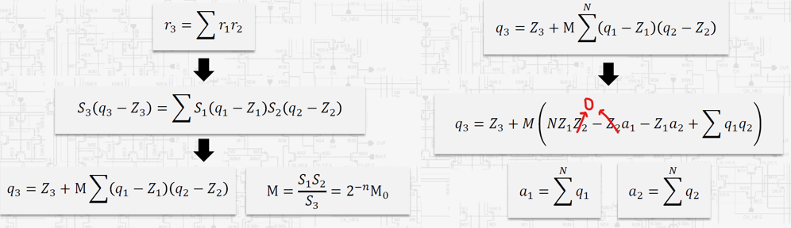
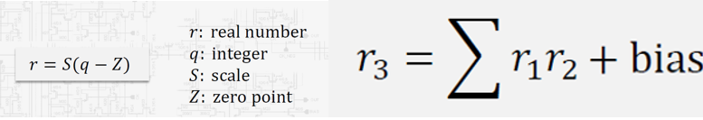
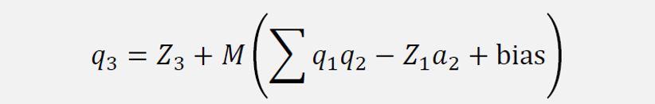
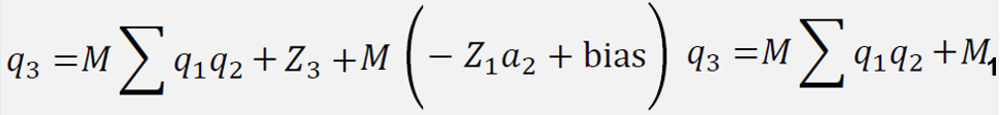

TFLite 量化參數轉硬體格式分析 (M0、Z1*a2)
分析來源：ref/cnn_classfication/CNN_training/write_coe.ipynb
1. 這個 Notebook 在做什麼？
write_coe.ipynb 並不是在重新做 training quantization，也不是把 float model 轉成 int8 model。
它假設已經有 model_quant.tflite，然後從 TFLite 取出 int8 weight、int32 bias、
input/output scale、zero point，再計算硬體需要的整數常數，最後輸出成 Vivado BRAM 可用的
.coe。
已量化 TFLite → TensorFlow Lite Interpreter 讀 tensor details → 找出 Conv2D / Dense 的 weight、bias、scale、zero point → 計算硬體 requantization 常數 → 依 RTL 讀取順序重排 weight → 寫成 weights_my.coe 與 M0_bias_my.coe
所以你原本想的「轉成 TFLite 後提取就好」方向是對的，只是硬體通常不能直接吃 TFLite 原始格式。 需要多做一步：把 TFLite 的量化參數轉成 RTL 方便使用的整數常數與記憶體排列。
2. 為什麼還要算 M0、Z1*a2？
TFLite int8 convolution 的數學概念是：
為何 q3 不是直接 sum(q1*q2) 答案： 因為 q1 和 q2 不是「真正數值」，它們只是量化座標。所以必須由實數(r)推導

real_input = S1 * (q1 - Z1) real_weight = S2 * q2 // weight zero point 通常是 0 (z2) real_output = S3 * (q3 - Z3)
Conv 的 int32 MAC 會先算：
a3 = sum(q1 * q2)
但真正要對齊 TFLite 時，input zero point 也要扣掉：
sum((q1 - Z1) * q2) = sum(q1*q2) - Z1 * sum(q2) = a3 - Z1*a2
其中：
| 名稱 | 意思 | 硬體用途 |
|---|---|---|
a2 |
某個 output channel 的所有 weight 總和，sum(q2)。 |
修正 input zero point 對 MAC 結果的影響。 |
Z1*a2 |
input zero point 乘上 weight 總和。 | 讓硬體可以做 a3 - Z1*a2 + bias。 |
M |
S1 * S2 / S3，浮點 requant multiplier。 |
把 int32 accumulation 轉回 output int8 尺度。 |
M0 |
M * 2^32 後轉成整數。 |
RTL 可用 int64 multiply + right shift 32 取代浮點乘法。 |
3. Notebook 的兩種寫法
Conv 本來就是 乘加(MAC)+ bias：

write_coe.ipynb 裡用比較直覺的方式輸出：
每個 output channel: M0 Z1*a2 bias

這表示 RTL 之後要自己做：acc_corrected = acc - Z1a2 + bias q_out_tmp = acc_corrected * M0 q_out = round(q_out_tmp / 2^32) + Z3 q_out_clamp = clamp(q_out, -128, 127)
同一個資料夾的 library/hardware_weight_compiler.py 有更進一步的整理方式：

M1 = M0 * (bias - Z1*a2) + (Z3 << 32) q_out_tmp = M0 * acc + M1 q_out = round(q_out_tmp / 2^32 q_out_clamp = clamp(q_out, -128, 127)
這種方式把 bias、Z1*a2、Z3 預先合成成 M1，
RTL datapath 會比較簡單。對你的 SR core 來說，我建議後續採用 M0 + M1 版本，
因為 requantization module 的 port 可以更乾淨。
4. weights_my.coe 在做什麼？
weights_my.coe 是把 TFLite 的 weight tensor 依照 RTL 讀取順序重新排列。
TFLite Conv2D weight shape 通常是：
[output_channel, kernel_h, kernel_w, input_channel]
但 RTL MAC 可能比較想用下面其中一種順序讀：
| 讀取順序 | 適合情境 |
|---|---|
cin → cout → kh → kw |
逐 input channel 累加，適合 multi-channel conv 分批處理。 |
cout → kh → kw → cin |
一次算某個 output channel，資料排列直覺。 |
所以這不是模型量化，而是「把 weight 排成硬體容易讀的 BRAM layout」。
5. 如果換成你的 Super Resolution TFLite，要怎麼做？
你的模型不需要照抄 cnn_classfication 的 notebook，因為你的網路比較小，而且沒有 Dense / MaxPool。 你需要做的是一個更乾淨的 SR 專用 extractor。
輸入: model/Bilinear_PP_v5_test_qat.tflite 輸出: conv1_weight.coe 或 conv1_weight.mem conv1_param.coe 或 conv1_param.mem conv3_weight.coe 或 conv3_weight.mem conv3_param.coe 或 conv3_param.mem quant_report.html golden intermediate tensors
5.1 Conv1 需要提取
| 項目 | 來源 | 硬體用途 |
|---|---|---|
| input scale / zero point | Conv1 input tensor | 計算 M0/M1。 |
| weight int8 | Conv1 filter tensor [8,3,3,1] |
Conv3x3 MAC。 |
| weight scale per output channel | Conv1 filter quantization | 每個 output channel 有自己的 M0/M1。 |
| bias int32 | Conv1 bias tensor [8] |
加在 int32 accumulation 上。 |
| output scale / zero point | Conv1 output tensor | Requantization 到 Conv1 output int8。 |
5.2 Conv3 需要提取
| 項目 | 來源 | 硬體用途 |
|---|---|---|
| input scale / zero point | Conv1/ReLU output tensor | Conv3 的 input quantization。 |
| weight int8 | Conv3 filter tensor [4,1,1,8] |
Conv1x1 MAC。 |
| weight scale per output channel | Conv3 filter quantization | 四個 sub-pixel channel 各自的 multiplier。 |
| bias int32 | Conv3 bias tensor [4] |
加在 int32 accumulation 上。 |
| output scale / zero point | Conv3 output tensor | PixelShuffle 前的 int8 tensor。 |
6. 對 SR Core 的建議
第一版不要先做完整 .coe 自動產生流程。先把 extractor 做成可以輸出
conv1/conv3 的 weight、bias、scale、zero point、M0/M1 表格，
再用小 patch testbench 驗證數學結果。
最小功能最需要的是可比對，不是漂亮的部署格式。建議順序是：
Step 1: 從 SR TFLite 提取 Conv1 / Conv3 tensors Step 2: 產生 Python golden: int8 input → Conv1 → ReLU → Conv3 Step 3: 產生 RTL 用 .mem/.coe: weight + M0/M1 Step 4: 先驗證 Conv1x1 或 Conv3x3 單層 Step 5: 再接 PixelShuffle wrapper
等 RTL core 的計算確認和 TFLite intermediate tensor 對得上，再把輸出格式固定成 Vivado BRAM 的
.coe 或 testbench 較好讀的 .mem。